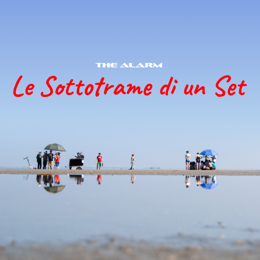
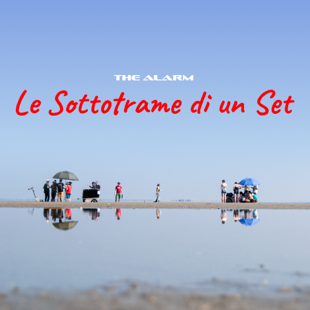

Sono Gioele Silvestre! Da anni mi dedico con passione e impegno nell'arte della fotografia, del videomaking e il montaggio cinematografico e per il cinema d'animazione. Mi diletto anche nela grafica, il sound design e la composizione musicale. Ho lavorato come fotografo di scena per diversi spettacoli e cortometraggi, per festival come Venezia Comics e come videomaker per workshop, video musicali e eventi
CONTATTI:
Mail: rtb.gioelesilvestre@gmail.com
Tel.: 3534616739
il mio profilo instagram
il mio canale youtube
Competenze: DaVinci Resolve, Fusion, Figma, Blender, Adobe Photoshop CC
2025 - riprese e montaggio di "Pervieni alla mia Lingua" per Rhiza Voce Specifica
2025 - foto e video per seminari del Music Village, Portogruaro
2025 - foto per la dodicesima edizione del festival Venezia Comics
2025 - video verticali per 24ore Cultura Editore
2024 - fotografo di scena per "Oscillazione: concerto performance"
2024 - "Corti in... Azione 2" corso di sceneggiatura cinematografica e produzione di un cortometraggio, tenuto da Tobia Berti
2021 - "Buio in sala" creazione di un cortometraggio in 7 giorni, tenuto da Federico Povoleri
2020/ora - "minutaggio" corso online su DaVinci Resolve, tenuto da Luca Mezzatesta
 

sito sviluppato da Gioele Silvestre
©Gioele Silvestre 2026